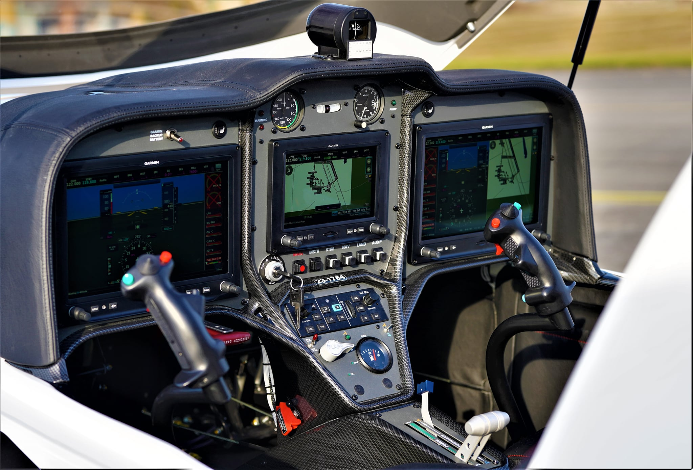
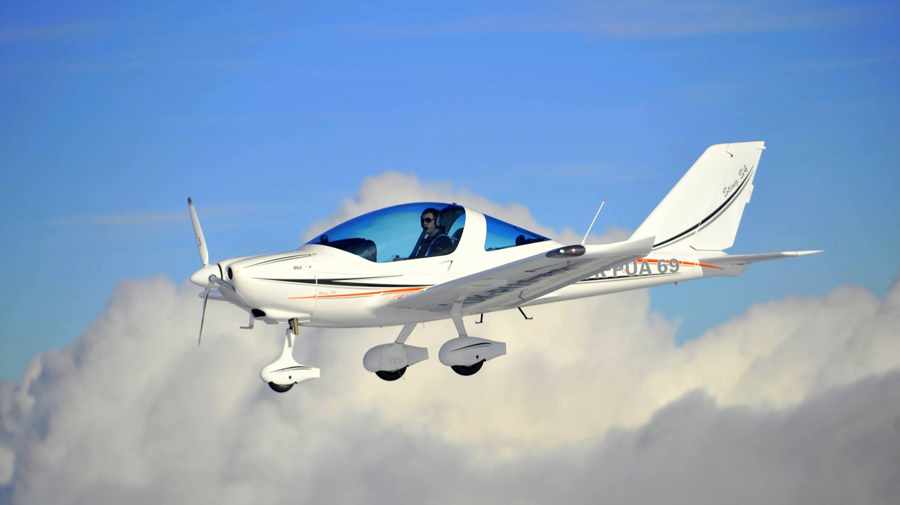

The Sting S4 builds on the experience of the Sting Carbon, proven and tested model. The legend, produced in nearly 400 units, has been innovated and improved. We have collected more than 10 years of experience with this aircraft, and now we have managed to fine-tune it into perfection. We have kept proven and popular features. We listened to the pilots and owners of the Sting Carbon aircraft and taken into account all of their valuable feedback. We listened carefully to you – our customers. Long and precise developing period followed, and in the end of this thorough process, the new Sting S4 was born. It is an elegant, comfortable, prestigious and beautiful aircraft. At the moment, one of the fastest and best manageable ultralight aircraft on the market.
Maximum comfort for both pilot and passenger. Increased luggage space. Easy cabin opening and access.
Uncompromised comfort for long voyages
Sufficient space and devices that you can comfortably reach to. Dashboard in front of the passenger has been tilted for improved view for the pilot. The Sting S4 offers everything within field of vision and comfortable reach.
anti-fog ventilation
cabin heating
handles for easy cabin opening
increased luggage space (up to 25 kg)
We are able to customize the cockpit according to client´s specific wishes and requirements. Choose from variety of classic analog instruments or opt for a combination with modern displays.
The Sting S4 is a composite aircraft with engine located in the front. The primary structure contains 85% of carbon fiber for maximum strength and weight saving. The wing skin and fuselage is a sandwich of carbon and foam core, glued together with epoxy glue. The coating is then evacuated and cured in an oven. Highly stressed parts are made in an autoclave. High safety carbon frame with ROPS ensures crew safety, even in the case of the aicraft being overturned. Varnishing is done using white dual-component paint. The final design touches are made by vinyl foil covering.
Length .......... 6,45 m
Height .......... 2020 mm
Wing span .......... 9,12 m
Wing area .......... 11,1 m2
Horizontal tail width .......... 1,68 m
Horizontal tail area .......... 1,06 m2
Vertical tail area ......... 2,68 m2
Cabin width .......... 1,13 m
Flying range .......... 840 km (1400 km with auxiliary fuel tanks)
Rotax 912 ULS
Rotax 912 iS Sport
Rotax 914
Rotax 912 iS Sport
Rotax 914
[Home]


Wide selection of various radio types, GPSs and many other safety and pilot devices are a given. The choice is up to you…
Even in the area of steering and control we have focused on maximum safety and comfort. The Sting S4 will get a hold of you and won´t let go. So effortlessly, safely and in style – that is the only way the Sting S4 can fly.
Complete dual control
Classic arrangement of control sticks
Adjustable foot pedals (220 mm range)
Steerable front wheel
Electronically operated flaps (15 ° for take-off, 40 ° for landing)
A new facelift of the cockpit is not the only benefit the Sting S4 comes with. We have also changed the nose gear design. Aerodynamic flawlesness and elegant appearance are the outcome.
Even in the area of steering and control we have focused on maximum safety and comfort. The Sting S4 will get a hold of you and won´t let go. So effortlessly, safely and in style – that is the only way the Sting S4 can fly.
Complete dual control
Classic arrangement of control sticks
Adjustable foot pedals (220 mm range)
Steerable front wheel
Electronically operated flaps (15 ° for take-off, 40 ° for landing)
A new facelift of the cockpit is not the only benefit the Sting S4 comes with. We have also changed the nose gear design. Aerodynamic flawlesness and elegant appearance are the outcome.
Never exceed speed .......... 165 knots
Cruising speed .......... 95 - 155 knots
Minimum speed .......... 35 knots
Climb rate (max. TOW) .......... 995 fpm
Empty weight (according to type) ..... 297 kg
Maximum take-off weight .......... 600 kg LSA
Minimum crew weight .......... 50 kg
Maximum luggagge weight .......... 25 kg
Fuel consumption (75% max. continuous power) ..... 16,2 l/h
Fuel tank capacity ..... 77 l (+40 litres in auxiliary tanks in the wings)
Cruising speed .......... 95 - 155 knots
Minimum speed .......... 35 knots
Climb rate (max. TOW) .......... 995 fpm
Empty weight (according to type) ..... 297 kg
Maximum take-off weight .......... 600 kg LSA
Minimum crew weight .......... 50 kg
Maximum luggagge weight .......... 25 kg
Fuel consumption (75% max. continuous power) ..... 16,2 l/h
Fuel tank capacity ..... 77 l (+40 litres in auxiliary tanks in the wings)



